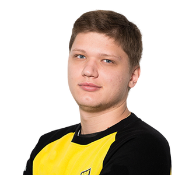
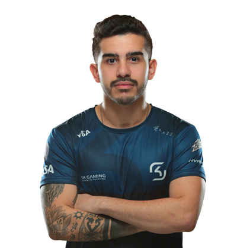
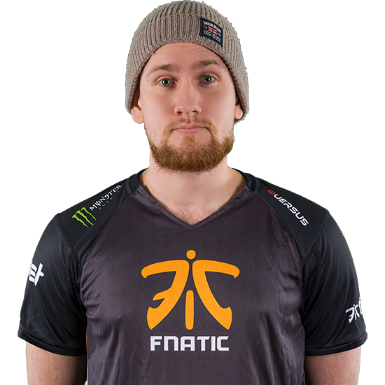
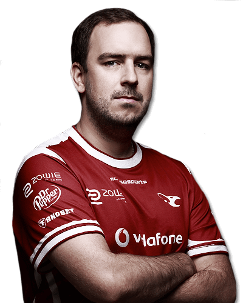

Oleksandr "s1mple" Kostylev is known to be one of the most talented Counter-Strike: Global Offensive players from his region, if not on the entire global scale. Despite being first known as a paramount rifler, he began to showcase his amazing potential with the sniper rifles in Amazing Gaming and HellRaisers.

Marcelo "coldzera" David (born October 31, 1994) is a Brazilian professional Counter-Strike: Global Offensive player. He is currently the team captain and in-game leader of SK Gaming. He is known as one of the best players in the world, near unmatched in incredible consistency and raw fragging.[1]
 Nikola "NiKo" Kovač (born February 16, 1997) is a Bosnian professional Counter-Strike: Global Offensive and former Counter-Strike 1.6 player. NiKo got very popular within the community after his impressive performances for mousesports, especially during ESEA Season 18 where he showed his incredible aim and game sense at such young age. He currently plays the role of a rifler and secondary AWPer for FaZe Clan.
Nikola "NiKo" Kovač (born February 16, 1997) is a Bosnian professional Counter-Strike: Global Offensive and former Counter-Strike 1.6 player. NiKo got very popular within the community after his impressive performances for mousesports, especially during ESEA Season 18 where he showed his incredible aim and game sense at such young age. He currently plays the role of a rifler and secondary AWPer for FaZe Clan.

Freddy "KRIMZ" Johansson (born April 25, 1994) is a Swedish professional Counter-Strike: Global Offensive player and former Counter-Strike 1.6 player. He currently plays for Fnatic as a support player. KRIMZ is regarded as one of the most consistent players in the competitive scene and is known for his clutching ability. His partnership with olofmeister in the 2015 Fnatic lineup is regarded as one of the best duos in Counter-Strike history.

Tomáš "oskar" Šťastný (born June 27, 1991) is Czech professional Counter-Strike: Global Offensive player and former Counter-Strike player. He has been considered as one of the strongest "online" players in 2015 for his impressive performances against top tier players, especially in FACEIT Pro League[1]. He currently plays the role of AWPer for mousesports.